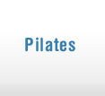
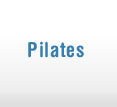

Pilates para Gestantes
As mudanças que ocorrem na gestação não são apenas hormonais e emocionais, são também posturais. À medida que avança a gestação, as alterações em músculos, articulações e coluna vertebral também ocorre.
O método Pilates é um programa de exercícios que pode trazer conforto à gravidez e ao parto, com foco na estabilidade da musculatura postural e do assoalho pélvico, e no fortalecimento e alongamento suave dos músculos.Além disso,o exercício físico durante a gestação ajuda a regular o peso e propicia bem-estar à futura mamãe e ao feto.
A prática de Pilates tem tido bastante sucesso entre as gestantes, pois nesta fase todos os cuidados são bem-vindos, e manter a mente e o corpo saudáveis traz inúmeros benefícios, tais como a diminuição da ansiedade e o aumento da consciência corporal. Melhora a concentração, a força postural, o equilíbrio, a coordenação e a qualidade dos movimentos, sem sobrecarregar as articulações. Conseqüentemente a prática do Pilates auxiliará a prevenir as dores lombares, ombros caídos e tensão no pescoço.
O método Pilates é um programa de exercícios que pode trazer conforto à gravidez e ao parto, com foco na estabilidade da musculatura postural e do assoalho pélvico, e no fortalecimento e alongamento suave dos músculos.Além disso,o exercício físico durante a gestação ajuda a regular o peso e propicia bem-estar à futura mamãe e ao feto.
A prática de Pilates tem tido bastante sucesso entre as gestantes, pois nesta fase todos os cuidados são bem-vindos, e manter a mente e o corpo saudáveis traz inúmeros benefícios, tais como a diminuição da ansiedade e o aumento da consciência corporal. Melhora a concentração, a força postural, o equilíbrio, a coordenação e a qualidade dos movimentos, sem sobrecarregar as articulações. Conseqüentemente a prática do Pilates auxiliará a prevenir as dores lombares, ombros caídos e tensão no pescoço.